ASTRAEON · Free Blender source checkpoint
SOURCE MODEL PILOT — unapproved geometry, unfinished face/hair/materials. No finished sprite or factory completion claimed.
This fresh model uses a connected MPFB body and finger skeleton, with modeled clothing, hair and equipment. The painted concept remains the design authority. Review body proportions, the difficult sword views and source separation before expanding animation.
No paid generationEight exact rotationsOne fixed orthographic camera320 × 320 · root 160,264One uniform scale · height reference 176
One pose · eight real character headings
Geometry preview only. The camera stays fixed; the character rotates. No east/west image mirroring.
S · yaw 0°
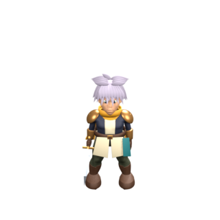
320 × 320 · root 160,264SW · yaw -45°
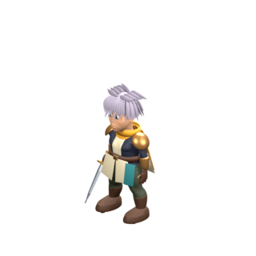
320 × 320 · root 160,264W · yaw -90°
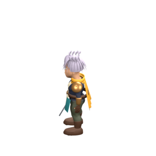
320 × 320 · root 160,264NW · yaw -135°
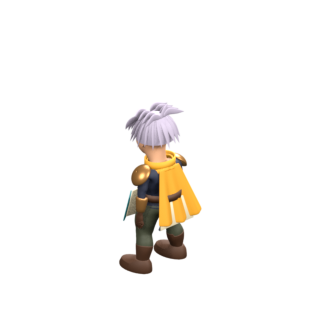
320 × 320 · root 160,264N · yaw -180°
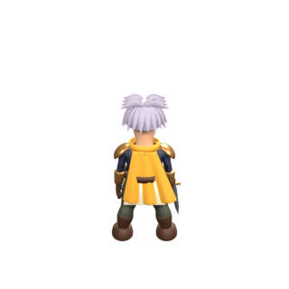
320 × 320 · root 160,264NE · yaw -225°
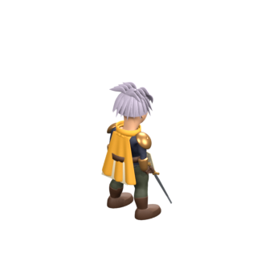
320 × 320 · root 160,264E · yaw -270°
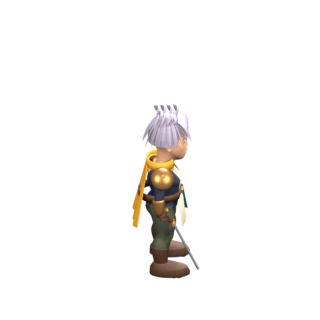
320 × 320 · root 160,264SE · yaw -315°
320 × 320 · root 160,264Grip inspection · W / NW / N / SE
Right glove, bracer and sword isolated in these close-ups. Other anatomy, outfit and cape are hidden for diagnosis. The full-character views above retain actual occlusion. Endpoint fit and binding tests do not approve anatomy or artwork.
W hand inspection
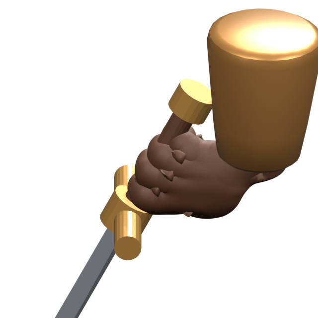
NW hand inspection
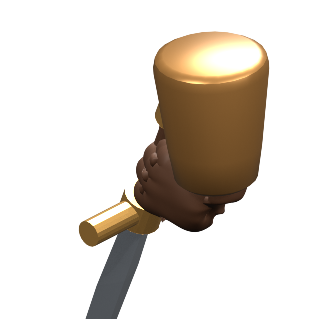
N hand inspection
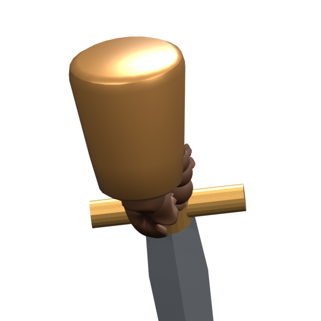
SE hand inspection
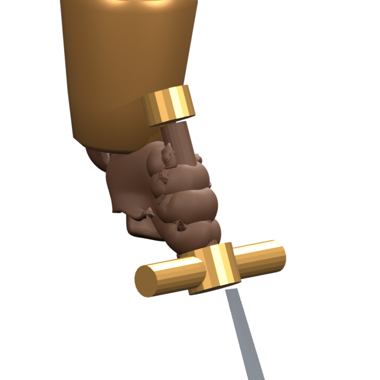
Source separation and reference
Approved painted concept

Concept approval only.
Current modeled source · SE
Pose and surface source, not finished painted art.
Underlying body · SE
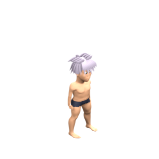
Hair remains. Source body and fingers are preserved under removable clothes.
Alternate blade · SE
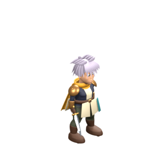
Same body, skeleton, grip and camera; blade geometry swapped.
Known remaining work: face and hair sculpt refinement toward the approved identity; garment construction details, cape emblem and painted material finish; motion library; depth-aware modular sprite exports; runtime validation and owner acceptance. This checkpoint provides no accepted animation coverage.
Editable grip source · Editable modeling source · Geometry and binding checks · Render checks · Camera and sockets · Provenance